Русский перевод. Неофициальный перевод актуальной документации snnTorch latest (0.9.4). Оригинал: https://snntorch.readthedocs.io/en/latest/. Документация распространяется по лицензии CC BY-SA 3.0.
Учебник 2 - Нейрон Leaky Integrate-and-Fire
Учебное пособие написано Джейсоном К. Эшрагианом (www.ncg.ucsc.edu)

Серия учебных пособий snnTorch основана на следующей статье. Если вы считаете эти ресурсы или код полезными в своей работе, пожалуйста, укажите следующий источник:
Примечание
- Этот учебник является статической нередактируемой версией. Интерактивные редактируемые версии доступны по следующим ссылкам:
Введение
В этом руководстве вы:
Изучите основы модели нейрона с утечкой, интеграцией и срабатыванием (LIF)
Используйте snnTorch для реализации LIF-нейрона первого порядка
Установите последнюю версию дистрибутива snnTorch из PyPi:
$ pip install snntorch
# imports
import snntorch as snn
from snntorch import spikeplot as splt
from snntorch import spikegen
import torch
import torch.nn as nn
import numpy as np
import matplotlib.pyplot as plt
1. Спектр моделей нейронов
Существует большое разнообразие моделей нейронов: от биологически точных моделей (например, модели Ходжкина-Хаксли) до чрезвычайно простого искусственного нейрона, который пронизывает все аспекты современного глубокого обучения.
Модели нейронов Ходжкина-Хаксли\(-\)Хотя биофизические модели могут воспроизводить электрофизиологические результаты с высокой степенью точности, их сложность в настоящее время затрудняет их использование.
Модель искусственного нейрона\(-\)На другом конце спектра находится искусственный нейрон. Входные сигналы умножаются на соответствующие веса и пропускаются через функцию активации. Это упрощение позволило исследователям глубокого обучения совершать невероятные подвиги в компьютерном зрении, обработке естественного языка и многих других задачах в области машинного обучения.
Модели нейронов с утечкой, интеграцией и срабатыванием (LIF)\(-\)Где-то посередине этого спектра находится модель нейрона с утечкой, интеграцией и срабатыванием (LIF). Она принимает сумму взвешенных входных сигналов, как и искусственный нейрон. Но вместо того, чтобы передавать ее напрямую на функцию активации, она интегрирует входной сигнал во времени с утечкой, подобно RC-цепи. Если интегрированное значение превышает порог, LIF-нейрон генерирует всплеск напряжения. Модель LIF абстрагируется от формы и профиля выходного всплеска; он просто рассматривается как дискретное событие. В результате информация сохраняется не в самом всплеске, а во времени (или частоте) всплесков. Простые модели спайковых нейронов дали много понимания нейронного кода, памяти, динамики сетей и, в последнее время, глубокого обучения. LIF-нейрон находится в идеальном балансе между биологической правдоподобностью и практичностью.
{kind=link}
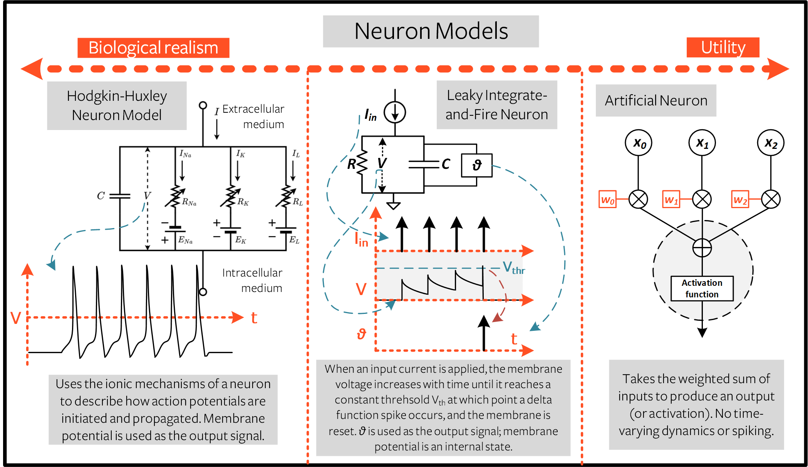
Различные версии модели LIF имеют свою собственную динамику и сценарии использования. snnTorch в настоящее время поддерживает следующие LIF-нейроны:
Модель RC Лапика:
snntorch.LapicqueМодель первого порядка:
snntorch.LeakyМодель нейрона на основе синаптической проводимости:
snntorch.SynapticРекуррентная модель первого порядка:
snntorch.RLeakyРекуррентная модель нейрона на основе синаптической проводимости:
snntorch.RSynapticМодель альфа-нейрона:
snntorch.Alpha
Также доступно несколько других не-LIF спайковых нейронов. Данное руководство сосредоточено на первой из этих моделей. Она будет использоваться для перехода к другим моделям в последующих руководствах.
2. Модель нейрона с утечкой, интеграцией и срабатыванием (LIF)
2.1 Спайковые нейроны: интуиция
В нашем мозге нейрон может быть связан с 1 000 \(-\) 10 000 других нейронов. Если один нейрон срабатывает, все нижележащие нейроны могут это почувствовать. Но что определяет, срабатывает ли нейрон вообще? Эксперименты прошлого века показывают, что если нейрон испытывает достаточный стимул на его входе, то он может возбудиться и сгенерировать свой собственный спайк.
Откуда берется этот стимул? Он может исходить от:
сенсорной периферии,
инвазивного электрода, искусственно стимулирующего нейрон, или, в большинстве случаев,
от других пресинаптических нейронов.
{kind=link}
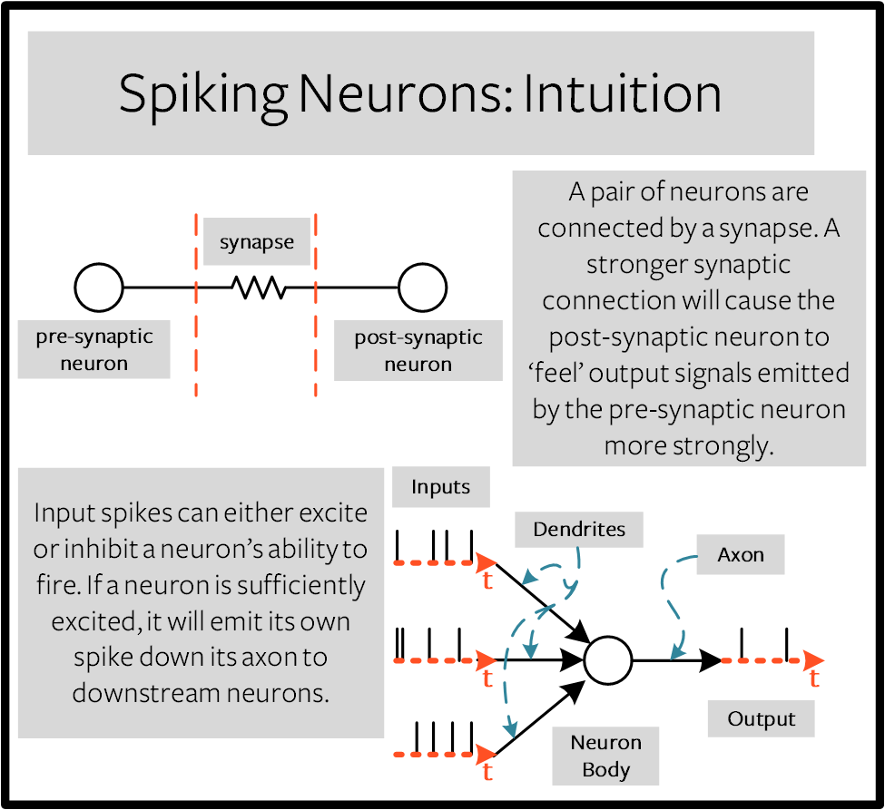
Учитывая, что эти спайки представляют собой очень короткие всплески электрической активности, маловероятно, что все входные спайки поступят к телу нейрона точно в унисон. Это указывает на наличие временной динамики, которая «поддерживает» входные спайки, наподобие задержки.
2.2 Пассивная мембрана
Как и все клетки, нейрон окружен тонкой мембраной. Эта мембрана представляет собой липидный бислой, который изолирует проводящий солевой раствор внутри нейрона от внеклеточной среды. Электрически два проводящих раствора, разделенных изолятором, действуют как конденсатор.
Другая функция этой мембраны — контролировать, что входит и выходит из этой клетки (например, такие ионы, как Na\(^+\)). Обычно мембрана непроницаема для ионов, что предотвращает их вход и выход из тела нейрона. Но в мембране есть специальные каналы, которые открываются при введении тока в нейрон. Это движение зарядов электрически моделируется резистором.
{kind=link}
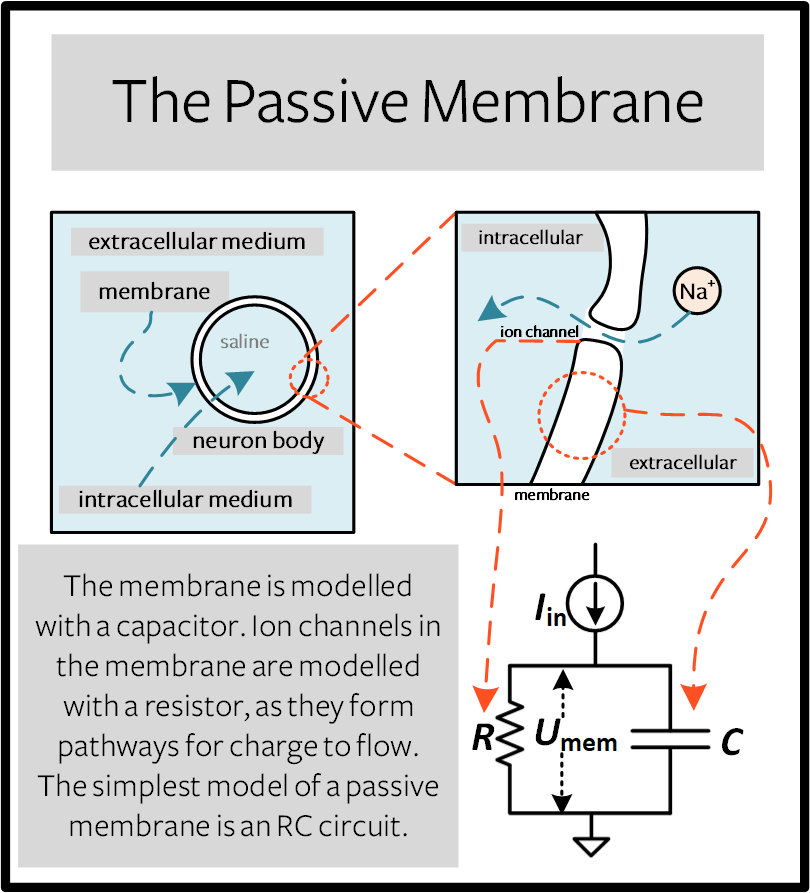
Следующий блок выведет поведение LIF-нейрона с нуля. Если вы предпочитаете пропустить математику, можете свободно пролистать дальше; после вывода мы применим более практический подход к пониманию динамики LIF-нейрона.
Необязательно: Вывод модели LIF-нейрона
Теперь предположим, что некоторый произвольный изменяющийся во времени ток \(I_{\rm in}(t)\) вводится в нейрон, будь то через электрическую стимуляцию или от других нейронов. Полный ток в цепи сохраняется, поэтому:
Согласно закону Ома, потенциал мембраны, измеряемый между внутренней и внешней сторонами нейрона \(U_{\rm mem}\) пропорционален току через резистор:
Емкость — это коэффициент пропорциональности между зарядом, накопленным на конденсаторе \(Q\) и \(U_{\rm mem}(t)\):
Скорость изменения заряда дает емкостный ток:
Следовательно:
Правая часть уравнения имеет единицы [Voltage]. В левой части уравнения член \(\frac{dU_{\rm mem}(t)}{dt}\) имеет единицы [Voltage/Time]. Чтобы приравнять его к левой части (т.е. к напряжению), \(RC\) должен иметь единицу [Time]. Мы называем \(\tau = RC\) постоянной времени цепи:
Пассивная мембрана, таким образом, описывается линейным дифференциальным уравнением.
Чтобы производная функции имела ту же форму, что и исходная функция, т.е. \(\frac{dU_{\rm mem}(t)}{dt} \propto U_{\rm mem}(t)\), это означает, что решение является экспоненциальным с постоянной времени \(\tau\).
Предположим, нейрон начинает с некоторого значения \(U_{0}\) без дальнейшего входа, т.е. \(I_{\rm in}(t)=0.\) Решение линейного дифференциального уравнения:
Общее решение показано ниже.
{kind=link}
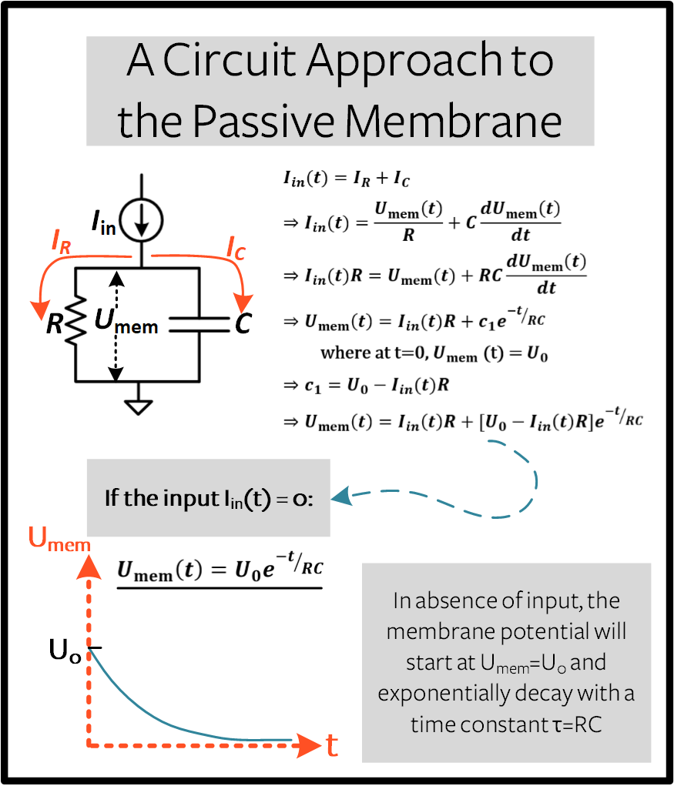
Необязательно: Метод прямого Эйлера для решения модели LIF-нейрона
Нам удалось найти аналитическое решение для LIF-нейрона, но неясно, как это может быть полезно в нейронной сети. На этот раз давайте вместо этого используем метод прямого Эйлера для решения предыдущего линейного обыкновенного дифференциального уравнения (ODE). Этот подход может показаться трудоемким, но он дает нам дискретное рекуррентное представление LIF- нейрона. Как только мы получим это решение, его можно будет напрямую применить к нейронной сети. Как и ранее, линейное ODE, описывающее RC-цепь:
Индекс от \(U(t)\) опущен для простоты.
Сначала решим эту производную, не беря предел \(\Delta t \rightarrow 0\):
Для достаточно малого \(\Delta t\), это дает достаточно хорошее приближение непрерывного интегрирования. Выделяя мембранный потенциал на следующем временном шаге, получаем:
Следующая функция представляет это уравнение:
def leaky_integrate_neuron(U, time_step=1e-3, I=0, R=5e7, C=1e-10):
tau = R*C
U = U + (time_step/tau)*(-U + I*R)
return U
Значения по умолчанию установлены на \(R=50 M\Omega\) и \(C=100pF\) (т.е. \(\tau=5ms\)). Они вполне реалистичны по отношению к биологическим нейронам.
Теперь выполните цикл по этой функции, итерация за один временной шаг. Мембранный потенциал инициализируется значением \(U=0.9 V\), при условии, что нет входного тока, \(I_{\rm in}=0 A\). Моделирование выполняется с миллисекундной точностью \(\Delta t=1\times 10^{-3}\)с.
num_steps = 100
U = 0.9
U_trace = [] # keeps a record of U for plotting
for step in range(num_steps):
U_trace.append(U)
U = leaky_integrate_neuron(U) # solve next step of U
plot_mem(U_trace, "Leaky Neuron Model")
{kind=link}
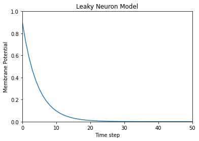
Это экспоненциальное затухание, похоже, соответствует нашим ожиданиям!
3 Модель нейрона LIF Лапика
Это сходство между нервными мембранами и RC-цепями было отмечено Луи Лапиком в 1907 году. Он стимулировал нервное волокно лягушки коротким электрическим импульсом и обнаружил, что мембраны нейронов можно приближенно рассматривать как конденсатор с утечкой. Мы отдаем дань его открытиям, назвав базовую модель нейрона LIF в snnTorch в его честь.
Большинство концепций модели Лапика переносятся и на другие модели нейронов LIF. Теперь пришло время смоделировать этот нейрон с помощью snnTorch.
3.1 Лапик: без стимула
Создайте экземпляр нейрона Лапика с помощью следующей строки кода. R и C изменены на более простые значения, при сохранении прежней постоянной времени \(\tau=5\times10^{-3}\)с.
time_step = 1e-3
R = 5
C = 1e-3
# leaky integrate and fire neuron, tau=5e-3
lif1 = snn.Lapicque(R=R, C=C, time_step=time_step)
Модель нейрона теперь хранится в lif1. Чтобы использовать этот нейрон:
Входы
cur_in: каждый элемент \(I_{\rm in}\) последовательно подается на вход (пока 0)mem: мембранный потенциал, ранее \(U[t]\), также подается на вход. Инициализируйте его произвольно, например \(U[0] = 0.9~V\).
Выходы
spk_out: выходной спайк \(S_{\rm out}[t+\Delta t]\) на следующем временном шаге ('1' если есть спайк; '0' если спайка нет)mem: мембранный потенциал \(U_{\rm mem}[t+\Delta t]\) на следующем временном шаге
Все они должны быть типа torch.Tensor.
# Initialize membrane, input, and output
mem = torch.ones(1) * 0.9 # U=0.9 at t=0
cur_in = torch.zeros(num_steps, 1) # I=0 for all t
spk_out = torch.zeros(1) # initialize output spikes
Эти значения только для начального временного шага \(t=0\).
Чтобы проанализировать эволюцию mem с течением времени, создайте список mem_rec для записи этих значений на каждом временном шаге.
# A list to store a recording of membrane potential
mem_rec = [mem]
Теперь пора запустить моделирование! На каждом временном шаге mem обновляется и сохраняется в mem_rec:
# pass updated value of mem and cur_in[step]=0 at every time step
for step in range(num_steps):
spk_out, mem = lif1(cur_in[step], mem)
# Store recordings of membrane potential
mem_rec.append(mem)
# convert the list of tensors into one tensor
mem_rec = torch.stack(mem_rec)
# pre-defined plotting function
plot_mem(mem_rec, "Lapicque's Neuron Model Without Stimulus")
{kind=link}
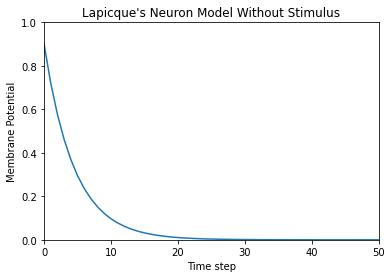
Мембранный потенциал затухает со временем при отсутствии каких-либо входных стимулов.
3.2 Лапик: ступенчатый вход
Теперь подайте ступенчатый ток \(I_{\rm in}(t)\) который включается в момент \(t=t_0\). Дано линейное дифференциальное уравнение первого порядка:
общее решение:
Если мембранный потенциал инициализирован значением \(U_{\rm mem}(t=0) = 0 V\), то:
Основываясь на этой явной зависимости от времени, мы ожидаем, что \(U_{\rm mem}\) будет экспоненциально релаксировать к \(I_{\rm in}R\). Давайте визуализируем это, подав импульс тока величиной \(I_{in}=100mA\) в момент \(t_0 = 10ms\).
# Initialize input current pulse
cur_in = torch.cat((torch.zeros(10, 1), torch.ones(190, 1)*0.1), 0) # input current turns on at t=10
# Initialize membrane, output and recordings
mem = torch.zeros(1) # membrane potential of 0 at t=0
spk_out = torch.zeros(1) # neuron needs somewhere to sequentially dump its output spikes
mem_rec = [mem]
На этот раз новые значения cur_in передаются нейрону:
num_steps = 200
# pass updated value of mem and cur_in[step] at every time step
for step in range(num_steps):
spk_out, mem = lif1(cur_in[step], mem)
mem_rec.append(mem)
# crunch -list- of tensors into one tensor
mem_rec = torch.stack(mem_rec)
plot_step_current_response(cur_in, mem_rec, 10)
{kind=link}
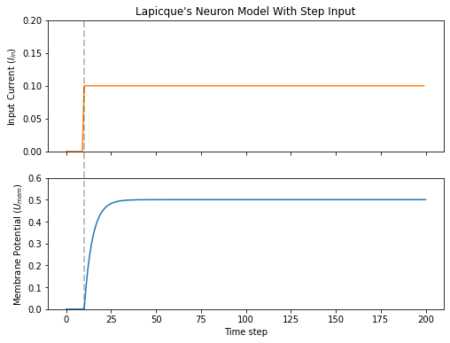
По мере того как \(t\rightarrow \infty\), мембранный потенциал \(U_{\rm mem}\) экспоненциально релаксирует к \(I_{\rm in}R\):
>>> print(f"The calculated value of input pulse [A] x resistance [Ω] is: {cur_in[11]*lif1.R} V")
>>> print(f"The simulated value of steady-state membrane potential is: {mem_rec[200][0]} V")
The calculated value of input pulse [A] x resistance [Ω] is: 0.5 V
The simulated value of steady-state membrane potential is: 0.4999999403953552 V
Достаточно близко!
3.3 Лапик: импульсный вход
А что если ступенчатый вход был обрезан на \(t=30ms\)?
# Initialize current pulse, membrane and outputs
cur_in1 = torch.cat((torch.zeros(10, 1), torch.ones(20, 1)*(0.1), torch.zeros(170, 1)), 0) # input turns on at t=10, off at t=30
mem = torch.zeros(1)
spk_out = torch.zeros(1)
mem_rec1 = [mem]
# neuron simulation
for step in range(num_steps):
spk_out, mem = lif1(cur_in1[step], mem)
mem_rec1.append(mem)
mem_rec1 = torch.stack(mem_rec1)
plot_current_pulse_response(cur_in1, mem_rec1, "Lapicque's Neuron Model With Input Pulse",
vline1=10, vline2=30)
{kind=link}
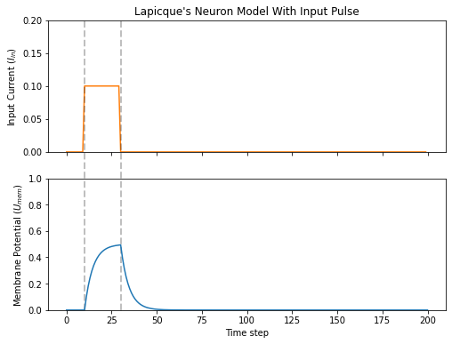
\(U_{\rm mem}\) возрастает так же, как и для ступенчатого входа, но теперь он затухает с постоянной времени \(\tau\) как в нашем первом моделировании.
Давайте подадим примерно такое же количество заряда \(Q = I \times t\) в цепь за вдвое меньшее время. Это означает, что амплитуда входного тока должна быть немного увеличена, а временное окно уменьшено.
# Increase amplitude of current pulse; half the time.
cur_in2 = torch.cat((torch.zeros(10, 1), torch.ones(10, 1)*0.111, torch.zeros(180, 1)), 0) # input turns on at t=10, off at t=20
mem = torch.zeros(1)
spk_out = torch.zeros(1)
mem_rec2 = [mem]
# neuron simulation
for step in range(num_steps):
spk_out, mem = lif1(cur_in2[step], mem)
mem_rec2.append(mem)
mem_rec2 = torch.stack(mem_rec2)
plot_current_pulse_response(cur_in2, mem_rec2, "Lapicque's Neuron Model With Input Pulse: x1/2 pulse width",
vline1=10, vline2=20)
{kind=link}
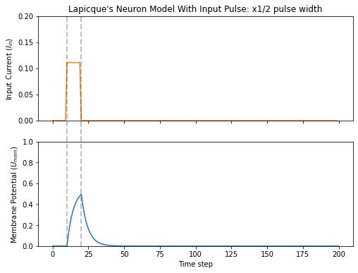
Повторим это снова, но с еще более быстрым входным импульсом и большей амплитудой:
# Increase amplitude of current pulse; quarter the time.
cur_in3 = torch.cat((torch.zeros(10, 1), torch.ones(5, 1)*0.147, torch.zeros(185, 1)), 0) # input turns on at t=10, off at t=15
mem = torch.zeros(1)
spk_out = torch.zeros(1)
mem_rec3 = [mem]
# neuron simulation
for step in range(num_steps):
spk_out, mem = lif1(cur_in3[step], mem)
mem_rec3.append(mem)
mem_rec3 = torch.stack(mem_rec3)
plot_current_pulse_response(cur_in3, mem_rec3, "Lapicque's Neuron Model With Input Pulse: x1/4 pulse width",
vline1=10, vline2=15)
{kind=link}
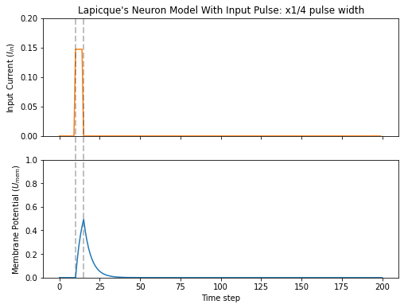
Теперь сравните все три эксперимента на одном графике:
compare_plots(cur_in1, cur_in2, cur_in3, mem_rec1, mem_rec2, mem_rec3, 10, 15,
20, 30, "Lapicque's Neuron Model With Input Pulse: Varying inputs")
{kind=link}
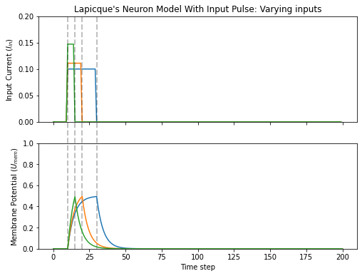
По мере увеличения амплитуды входного импульса тока время нарастания мембранного потенциала сокращается. В пределе, когда ширина входного импульса тока становится бесконечно малой, \(T_W \rightarrow 0s\), мембранный потенциал будет скачкообразно возрастать практически за нулевое время нарастания:
# Current spike input
cur_in4 = torch.cat((torch.zeros(10, 1), torch.ones(1, 1)*0.5, torch.zeros(189, 1)), 0) # input only on for 1 time step
mem = torch.zeros(1)
spk_out = torch.zeros(1)
mem_rec4 = [mem]
# neuron simulation
for step in range(num_steps):
spk_out, mem = lif1(cur_in4[step], mem)
mem_rec4.append(mem)
mem_rec4 = torch.stack(mem_rec4)
plot_current_pulse_response(cur_in4, mem_rec4, "Lapicque's Neuron Model With Input Spike",
vline1=10, ylim_max1=0.6)
{kind=link}
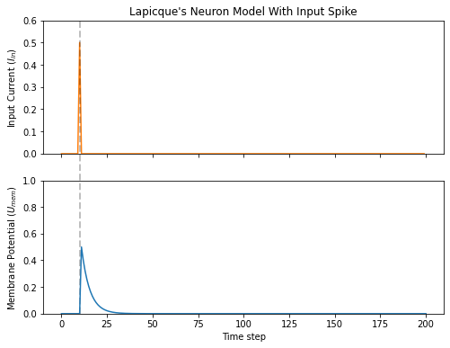
Ширина импульса тока теперь настолько мала, что он фактически выглядит как спайк. То есть заряд доставляется за бесконечно короткий промежуток времени, \(I_{\rm in}(t) = Q/t_0\) где \(t_0 \rightarrow 0\). Более формально:
где \(\delta (t-t_0)\) является дельта-функцией Дирака. Физически невозможно «мгновенно» передать заряд. Но интегрирование \(I_{\rm in}\) дает физически осмысленный результат, так как мы можем получить переданный заряд:
Здесь, \(f(t_0) = I_{\rm in}(t_0=10) = 0.5A \implies f(t) = Q = 0.5C\).
Надеюсь, вы хорошо поняли, как мембранный потенциал утекает в состоянии покоя и интегрирует входной ток. Это охватывает «утечку» и «интеграцию» части нейрона. А как насчет срабатывания?
3.4 Lapicque: Срабатывание
До сих пор мы видели только то, как нейрон реагирует на спайки на входе. Чтобы нейрон мог генерировать и испускать собственные спайки на выходе, пассивная мембранная модель должна быть объединена с порогом.
Если мембранный потенциал превышает этот порог, то за пределами пассивной мембранной модели будет генерироваться спайк напряжения.
{kind=link}
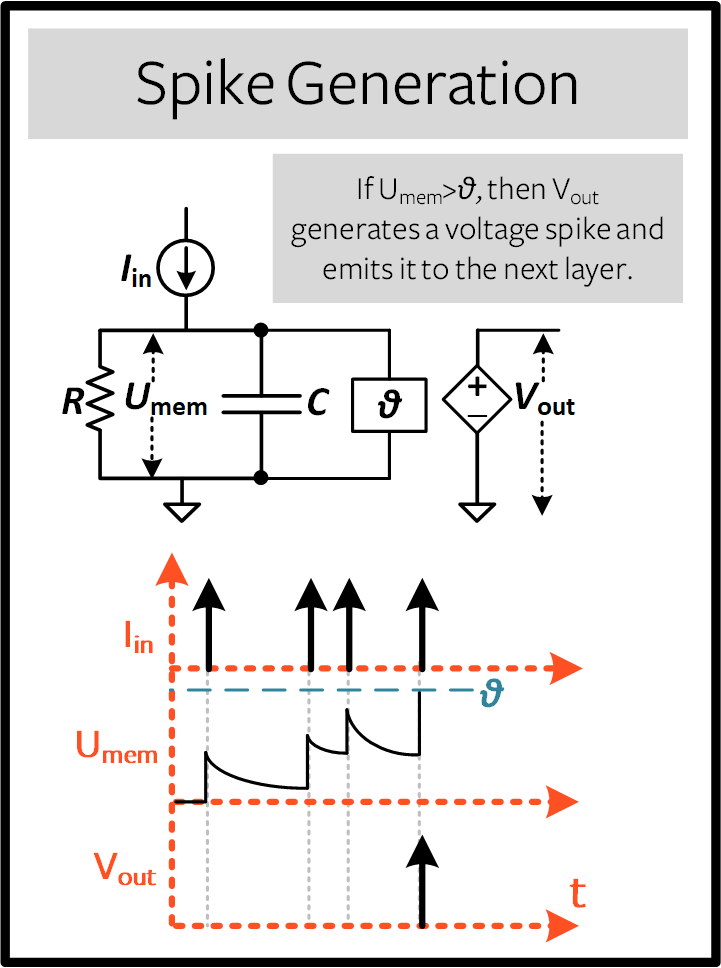
Измените leaky_integrate_neuron функцию из предыдущего раздела, чтобы добавить
спайковый ответ.
# R=5.1, C=5e-3 for illustrative purposes
def leaky_integrate_and_fire(mem, cur=0, threshold=1, time_step=1e-3, R=5.1, C=5e-3):
tau_mem = R*C
spk = (mem > threshold) # if membrane exceeds threshold, spk=1, else, 0
mem = mem + (time_step/tau_mem)*(-mem + cur*R)
return mem, spk
Задайте threshold=1, и приложите ступенчатый ток, чтобы заставить этот нейрон
генерировать спайки.
# Small step current input
cur_in = torch.cat((torch.zeros(10), torch.ones(190)*0.2), 0)
mem = torch.zeros(1)
mem_rec = []
spk_rec = []
# neuron simulation
for step in range(num_steps):
mem, spk = leaky_integrate_and_fire(mem, cur_in[step])
mem_rec.append(mem)
spk_rec.append(spk)
# convert lists to tensors
mem_rec = torch.stack(mem_rec)
spk_rec = torch.stack(spk_rec)
plot_cur_mem_spk(cur_in, mem_rec, spk_rec, thr_line=1, vline=109, ylim_max2=1.3,
title="LIF Neuron Model With Uncontrolled Spiking")
{kind=link}
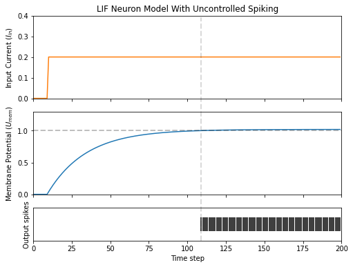
Ой! Выходные спайки вышли из-под контроля! Это потому, что мы забыли добавить механизм сброса. В реальности каждый раз, когда нейрон срабатывает, мембранный потенциал гиперполяризуется обратно к потенциалу покоя.
Реализация этого механизма сброса в нашем нейроне:
# LIF w/Reset mechanism
def leaky_integrate_and_fire(mem, cur=0, threshold=1, time_step=1e-3, R=5.1, C=5e-3):
tau_mem = R*C
spk = (mem > threshold)
mem = mem + (time_step/tau_mem)*(-mem + cur*R) - spk*threshold # every time spk=1, subtract the threhsold
return mem, spk
# Small step current input
cur_in = torch.cat((torch.zeros(10), torch.ones(190)*0.2), 0)
mem = torch.zeros(1)
mem_rec = []
spk_rec = []
# neuron simulation
for step in range(num_steps):
mem, spk = leaky_integrate_and_fire(mem, cur_in[step])
mem_rec.append(mem)
spk_rec.append(spk)
# convert lists to tensors
mem_rec = torch.stack(mem_rec)
spk_rec = torch.stack(spk_rec)
plot_cur_mem_spk(cur_in, mem_rec, spk_rec, thr_line=1, vline=109, ylim_max2=1.3,
title="LIF Neuron Model With Reset")
{kind=link}
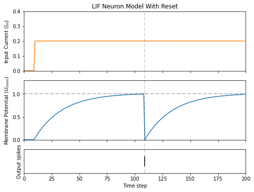
Бам! Теперь у нас есть рабочая модель нейрона с утечкой, интеграцией и срабатыванием (LIF)!
Обратите внимание, что если \(I_{\rm in}=0.2 A\) и \(R<5 \Omega\), то
\(I\times R < 1 V\). Если threshold=1, то спайки не будут
возникать. Можете вернуться назад, изменить значения и проверить это.
Как и прежде, весь этот код сводится к вызову встроенной модели нейрона Lapicque из snnTorch:
# Create the same neuron as before using snnTorch
lif2 = snn.Lapicque(R=5.1, C=5e-3, time_step=1e-3)
>>> print(f"Membrane potential time constant: {lif2.R * lif2.C:.3f}s")
"Membrane potential time constant: 0.025s"
# Initialize inputs and outputs
cur_in = torch.cat((torch.zeros(10, 1), torch.ones(190, 1)*0.2), 0)
mem = torch.zeros(1)
spk_out = torch.zeros(1)
mem_rec = [mem]
spk_rec = [spk_out]
# Simulation run across 100 time steps.
for step in range(num_steps):
spk_out, mem = lif2(cur_in[step], mem)
mem_rec.append(mem)
spk_rec.append(spk_out)
# convert lists to tensors
mem_rec = torch.stack(mem_rec)
spk_rec = torch.stack(spk_rec)
plot_cur_mem_spk(cur_in, mem_rec, spk_rec, thr_line=1, vline=109, ylim_max2=1.3,
title="Lapicque Neuron Model With Step Input")
{kind=link}
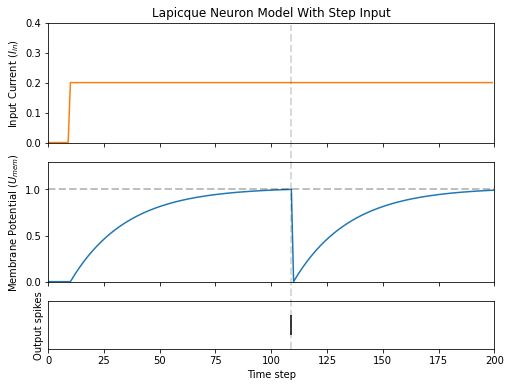
Мембранный потенциал экспоненциально растет, затем достигает порога, после чего сбрасывается. Мы можем примерно увидеть, что это происходит между \(105ms < t_{\rm spk} < 115ms\). Из любопытства давайте посмотрим, из чего на самом деле состоит запись спайков:
>>> print(spk_rec[105:115].view(-1))
tensor([0., 0., 0., 0., 1., 0., 0., 0., 0., 0.])
Отсутствие спайка обозначается \(S_{\rm out}=0\), а наличие спайка — \(S_{\rm out}=1\). Здесь спайк происходит в момент \(S_{\rm out}[t=109]=1\). Если вам интересно, почему каждая из этих записей хранится в виде тензора, то это потому, что в будущих руководствах мы будем моделировать крупномасштабные нейронные сети. Каждая запись будет содержать спайковые ответы многих нейронов, и тензоры могут быть загружены в память GPU для ускорения процесса обучения.
Если \(I_{\rm in}\) увеличивается, то мембранный потенциал приближается к порогу \(U_{\rm thr}\) быстрее:
# Initialize inputs and outputs
cur_in = torch.cat((torch.zeros(10, 1), torch.ones(190, 1)*0.3), 0) # increased current
mem = torch.zeros(1)
spk_out = torch.zeros(1)
mem_rec = [mem]
spk_rec = [spk_out]
# neuron simulation
for step in range(num_steps):
spk_out, mem = lif2(cur_in[step], mem)
mem_rec.append(mem)
spk_rec.append(spk_out)
# convert lists to tensors
mem_rec = torch.stack(mem_rec)
spk_rec = torch.stack(spk_rec)
plot_cur_mem_spk(cur_in, mem_rec, spk_rec, thr_line=1, ylim_max2=1.3,
title="Lapicque Neuron Model With Periodic Firing")
{kind=link}
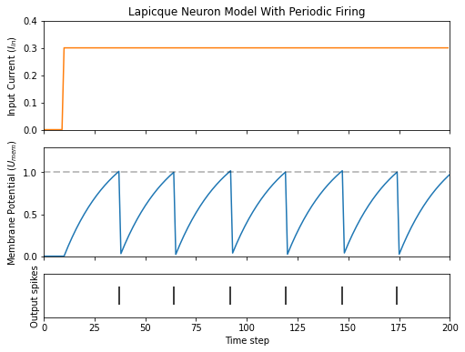
Аналогичное увеличение частоты срабатывания также может быть вызвано уменьшением порога. Для этого необходимо инициализировать новую модель нейрона, но остальная часть блока кода полностью совпадает с приведенной выше:
# neuron with halved threshold
lif3 = snn.Lapicque(R=5.1, C=5e-3, time_step=1e-3, threshold=0.5)
# Initialize inputs and outputs
cur_in = torch.cat((torch.zeros(10, 1), torch.ones(190, 1)*0.3), 0)
mem = torch.zeros(1)
spk_out = torch.zeros(1)
mem_rec = [mem]
spk_rec = [spk_out]
# Neuron simulation
for step in range(num_steps):
spk_out, mem = lif3(cur_in[step], mem)
mem_rec.append(mem)
spk_rec.append(spk_out)
# convert lists to tensors
mem_rec = torch.stack(mem_rec)
spk_rec = torch.stack(spk_rec)
plot_cur_mem_spk(cur_in, mem_rec, spk_rec, thr_line=0.5, ylim_max2=1.3,
title="Lapicque Neuron Model With Lower Threshold")
{kind=link}
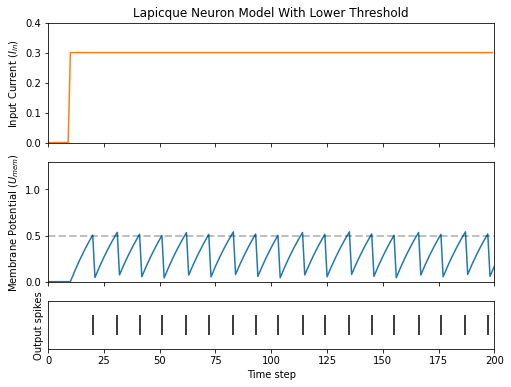
Вот что происходит при инъекции постоянного тока. Но как в глубоких нейронных сетях, так и в биологическом мозге большинство нейронов соединены с другими нейронами. Они с большей вероятностью получают спайки, а не инъекции постоянного тока.
3.5 Lapicque: Спайковые входы
Давайте используем некоторые из навыков, которые мы получили в Урок
1,
и используем snntorch.spikegen модуль для создания случайно
генерируемых входных спайков.
# Create a 1-D random spike train. Each element has a probability of 40% of firing.
spk_in = spikegen.rate_conv(torch.ones((num_steps,1)) * 0.40)
Запустите следующий блок кода, чтобы увидеть, сколько спайков было сгенерировано.
>>> print(f"There are {int(sum(spk_in))} total spikes out of {len(spk_in)} time steps.")
There are 85 total spikes out of 200 time steps.
fig = plt.figure(facecolor="w", figsize=(8, 1))
ax = fig.add_subplot(111)
splt.raster(spk_in.reshape(num_steps, -1), ax, s=100, c="black", marker="|")
plt.title("Input Spikes")
plt.xlabel("Time step")
plt.yticks([])
plt.show()
{kind=link}
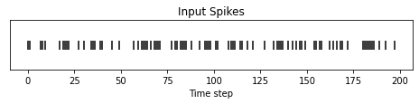
# Initialize inputs and outputs
mem = torch.ones(1)*0.5
spk_out = torch.zeros(1)
mem_rec = [mem]
spk_rec = [spk_out]
# Neuron simulation
for step in range(num_steps):
spk_out, mem = lif3(spk_in[step], mem)
spk_rec.append(spk_out)
mem_rec.append(mem)
# convert lists to tensors
mem_rec = torch.stack(mem_rec)
spk_rec = torch.stack(spk_rec)
plot_spk_mem_spk(spk_in, mem_rec, spk_rec, "Lapicque's Neuron Model With Input Spikes")
{kind=link}
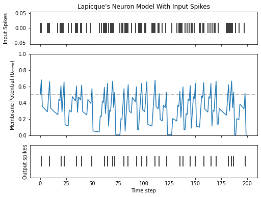
3.6 Lapicque: Механизмы сброса
Мы уже реализовали механизм сброса с нуля, но давайте углубимся немного глубже. Это резкое падение мембранного потенциала способствует снижению генерации спайков, что дополняет часть теории о том, как мозг является таким энергоэффективным. Биологически это падение мембранного потенциала известно как «гиперполяризация». После этого временно становится сложнее вызвать очередной спайк у нейрона. Здесь мы используем механизм сброса для моделирования гиперполяризации.
Существует два способа реализации механизма сброса:
сброс вычитанием (по умолчанию) \(-\) вычитать порог из мембранного потенциала каждый раз, когда генерируется спайк;
сброс до нуля \(-\) принудительно обнулять мембранный потенциал при каждом спайке.
без сброса \(-\) ничего не делать, позволяя разряду идти потенциально неконтролируемо.
{kind=link}
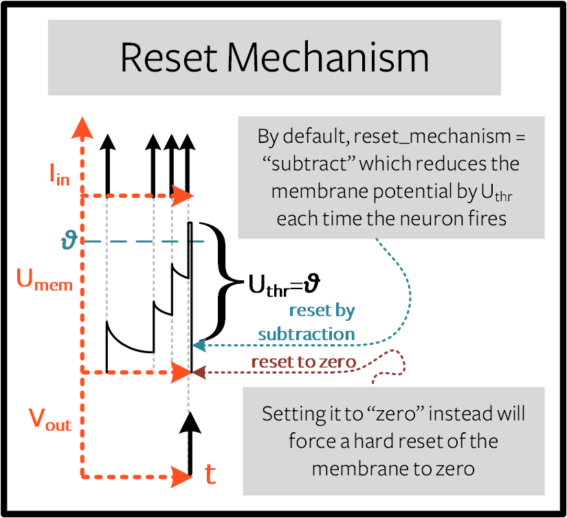
Создайте другую модель нейрона, чтобы продемонстрировать, как переключаться между механизмами сброса. По умолчанию модели нейронов snnTorch используют reset_mechanism = "subtract".
Это можно явно переопределить, передав аргумент
reset_mechanism = "zero".
# Neuron with reset_mechanism set to "zero"
lif4 = snn.Lapicque(R=5.1, C=5e-3, time_step=1e-3, threshold=0.5, reset_mechanism="zero")
# Initialize inputs and outputs
spk_in = spikegen.rate_conv(torch.ones((num_steps, 1)) * 0.40)
mem = torch.ones(1)*0.5
spk_out = torch.zeros(1)
mem_rec0 = [mem]
spk_rec0 = [spk_out]
# Neuron simulation
for step in range(num_steps):
spk_out, mem = lif4(spk_in[step], mem)
spk_rec0.append(spk_out)
mem_rec0.append(mem)
# convert lists to tensors
mem_rec0 = torch.stack(mem_rec0)
spk_rec0 = torch.stack(spk_rec0)
plot_reset_comparison(spk_in, mem_rec, spk_rec, mem_rec0, spk_rec0)
{kind=link}
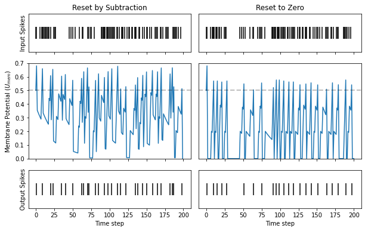
Обратите пристальное внимание на эволюцию мембранного потенциала, особенно в моменты после достижения порога. Вы можете заметить, что для варианта “Reset to Zero”, мембранный потенциал принудительно возвращается к нулю после каждого спайка.
Так какой же лучше? Применение "subtract" (значение по умолчанию в
reset_mechanism) менее затратно, поскольку не игнорирует, насколько
мембранный потенциал превышает порог.
С другой стороны, применение жесткого сброса с помощью "zero" способствует
разреженности и потенциально меньшему энергопотреблению при работе
на специализированном нейроморфном оборудовании. Оба варианта доступны для
экспериментов.
Это охватывает основы модели нейрона LIF!
Заключение
На практике мы, вероятно, не стали бы использовать эту модель нейрона для обучения нейронной сети. Модель Lapicque LIF добавила много гиперпараметров для настройки: \(R\), \(C\), \(\Delta t\), \(U_{\rm thr}\), и выбор механизма сброса. Это всё немного пугает. Поэтому следующий учебник устранит большую часть этих гиперпараметров и представит модель нейрона, лучше подходящую для крупномасштабного глубокого обучения.
Если вам нравится этот проект, пожалуйста, рассмотрите возможность поставить звезду ⭐ репозиторию на GitHub, так как это самый простой и лучший способ поддержать его.
Для справки, документация может быть найдена здесь.
Дальнейшее чтение
snnTorch документация моделей Lapicque, Leaky, Synaptic и Alpha
Нейронная динамика: от одиночных нейронов до сетей и моделей познания от Вульфрама Герстнера, Вернера М. Кистлера, Ричарда Науда и Лиама Панински.
Теоретическая нейронаука: вычислительное и математическое моделирование нейронных систем от Лоуренса Ф. Эбботта и Питера Даяна